PDF, schémas électriques, GRAFCET et plans — logiciel libre
PDF DUO sert à lire, remplir et signer des PDF, à dessiner des schémas électriques, pneumatiques et réseau, des GRAFCET et des plans de logement, et à convertir Word / ODF ↔ PDF. Il est pensé pour les élèves et les professeurs de toutes les sections de lycée professionnel (par exemple MELEC, CIEL, prothésiste dentaire, logistique, magasinier), et rend aussi service à la vie du lycée : affiches, formulaires d'adhésion et documents signés de la MDL. Les numéros rouges des captures renvoient aux listes placées dessous.
1. Installation
Windows : lancer l'installeur PDF-DUO-Windows-Setup.exe, ou décompresser PDF-DUO-Windows.zip puis ouvrir PDF DUO.exe.
Linux : double-cliquer sur pdf-duo_amd64.deb (Debian, Ubuntu, Mint), ou utiliser l'AppImage (rendre le fichier exécutable puis l'ouvrir).
macOS : choisir la version Apple Silicon (M1, M2…) ou Intel, décompresser, glisser « PDF DUO » dans Applications. Au premier lancement : clic droit › Ouvrir.
Conversions Word → PDF : PDF DUO utilise LibreOffice s'il est installé (le plus fidèle, gratuit), sinon Microsoft Word, sinon sa propre conversion (mise en page simplifiée). Pour les fichiers ODT, il faut LibreOffice.
2. L'écran
En haut, à gauche des menus : ouvrir, enregistrer, imprimer, annuler ↶ / rétablir ↷, zoom − / +, page entière, caractères spéciaux Ω √.
À gauche : les outils (sélection, texte, trait, fil, liaison, formes, crayon, surligneur, fil volant, capture).
À droite : la bibliothèque de symboles (choisir une catégorie ou taper un mot dans la recherche) et le panneau Propriétés de l'élément sélectionné.
Affichage › Palettes affiche ou masque chaque panneau ; Affichage › Thème et Langue changent l'apparence et la langue.
Mode présentation (touche F11 ou bouton ⛶) : plein écran ; seuls les outils à gauche et la bibliothèque à droite restent visibles ; les menus et le zoom réapparaissent quand la souris touche le haut de l'écran, Échap pour quitter.
6Bibliothèque de symboles (catégories et recherche)
7Propriétés de l'élément sélectionné
8Pages (miniatures) et onglet Formulaire
9La page de travail
3. Mode présentation (plein écran)
Pour projeter un schéma en classe ou travailler sans rien autour, passez en mode présentation : la page occupe tout l'écran. Restent visibles la barre d'outils de gauche (sélection, texte, trait, flèche, fil, formes, crayon, surligneur) et la bibliothèque à droite, réduite à deux colonnes : on peut donc encore écrire et poser des symboles.
Pour y entrer : touche F11, ou bouton ⛶ dans la barre du haut, ou menu Affichage › Mode présentation (plein écran).
Pendant la présentation : Ctrl + molette pour zoomer, molette pour faire défiler. Amenez la souris tout en haut de l'écran : les menus et la barre rapide (zoom − / +, page entière, annuler) réapparaissent, puis se cachent quand la souris redescend.
Pour en sortir : touche Échap (ou F11 à nouveau). Les palettes et barres d'outils reviennent comme avant. Si un outil de dessin est en cours, un premier appui sur Échap le termine, un second quitte le plein écran.
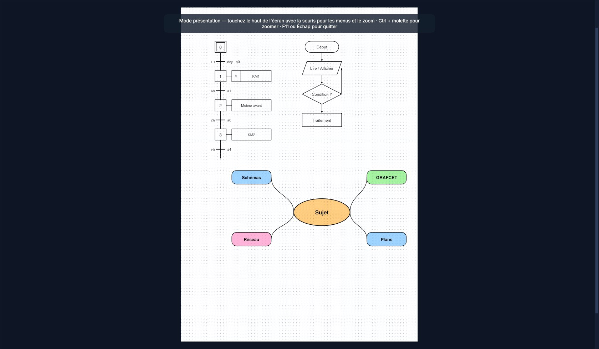
Le mode présentation : la page sur tout l'écran, avec les outils et la bibliothèque
1Outils d'écriture et de dessin
2Bibliothèque réduite à deux colonnes
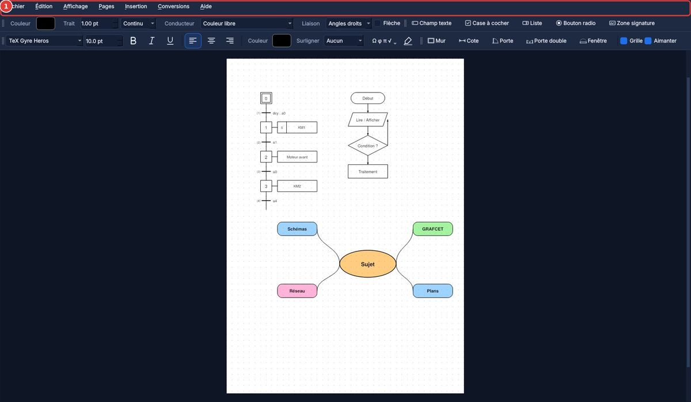
Souris en haut de l'écran : les menus et le zoom réapparaissent
1Menus et barre rapide : zoom − / +, page entière, annuler, ⛶ pour quitter
4. Ouvrir et enregistrer
Fichier › Ouvrir accepte les PDF, les documents Word / ODT (convertis automatiquement) et les images.
Les dessins sont enregistrés en vectoriel dans le PDF. En rouvrant le fichier dans PDF DUO, tout reste modifiable.
Fichier › Exporter un PDF final produit un PDF aplati, à distribuer.
5. Dessiner un schéma
Cliquer un symbole dans la bibliothèque puis cliquer sur la page pour le poser (ou glisser-déposer). Échap pour finir.
Favoris : clic droit sur un symbole › Ajouter aux favoris. Il reçoit une étoile ★, passe en tête de sa catégorie et apparaît dans la catégorie ★ Favoris, en haut de la liste, qui s'ouvre au démarrage. Clic droit › Retirer des favoris pour l'enlever. Les favoris sont gardés d'une séance à l'autre. Le bouton ☆ à côté de la liste met une bibliothèque entière en favori : elle passe en tête de la liste. Clic droit sur un élément de la page : premier plan, arrière-plan, rotation, miroir, copier, dupliquer, supprimer, favoris.
R tourne de 90°, E de 15° (Maj = sens inverse), H / V font un miroir. Angle précis dans Propriétés.
La poignée bleue en bas à droite agrandit l'élément en gardant ses proportions.
Le repère (KM1, S1…) et les numéros de bornes se modifient dans Propriétés ; boutons « Repère à gauche / à droite ».
Outil Fil : un clic par angle ; un clic sur une borne (petit cercle) accroche le fil. Outil Liaison : cliquer deux bornes, le tracé se fait seul. Les fils suivent les symboles déplacés.
Liste Conducteur : couleurs normalisées (phase, neutre bleu, terre vert/jaune, fibre, Ethernet…). Les points de jonction se placent automatiquement.
Énergie solaire : deux catégories. Énergie solaire – symboles pour le schéma normalisé (cellule et module PV, onduleur, régulateur MPPT / PWM, batterie 2 / 6 / 12 / 24 / 48 V, shunt, ampèremètre et voltmètre continus, compteur Wh, fusible gPV, sectionneur DC, parafoudre, MC4). Énergie solaire – schéma technologique pour dessiner une installation en site isolé avec les appareils réels (panneau, contrôleur de charge, batterie, onduleur, moniteur, charges), en reliant leurs bornes avec des fils rouges et noirs. Exemple fourni : exemple-solaire.pdf.
Sources de secours : éolienne (avec régulateur et résistance de délestage), groupe électrogène et alternateur de voiture ou de bateau, en symbole et en vue réaliste. Les coupe-circuits à fusibles 2 pôles (vue) protègent le champ PV, la sortie batterie et la sortie utilisation, comme dans l'exemple.
Organigramme (rapport de stage) : Insertion › Organigramme d'entreprise pose un organigramme déjà relié (direction, services, tuteur, stagiaire) ; double-cliquez sur une case pour écrire les noms. Les cases de la catégorie Organigramme permettent de l'agrandir.
Bibliothèques ajoutées en 1.2.0 : Prévention électrique (EPI, EIS, ECS : casque, gants isolants, tapis, cadenas de consignation, VAT, balisage, MALT-CCT), Manutention (pictogrammes d'emballage), Sécurité (signalisation, produits dangereux SGH), Logistique, Prothésiste dentaire et Outils de l'électricien, du mécanicien et de l'informatique (pince à sertir RJ45, connecteurs, testeur…). Dessins originaux, libres d'utilisation. Aussi : Travail en hauteur (échafaudage, PIRL, escabeau, nacelles), outils isolés 1000 V, schéma dentaire avec numérotation FDI et prothèses amovibles.
Bibliothèques ajoutées en 1.3.0 : Gestes qui sauvent, Biologie de base, Robotique (Arduino, Raspberry Pi avec brochage GPIO, micro:bit, capteurs et modules ; LED de couleur et résistance à anneaux réglables, code des couleurs), Sécurité incendie (équipements et signalisation), Équipements industriels, Habitat (GTL, chauffage, éclairage, bornes de recharge) et Métiers de la sécurité (sapeurs-pompiers, sûreté, police).
Équipements à états : pour la barrière, le tapis roulant, le monte-charge, l'ascenseur, la pompe, les réservoirs, les vérins, les capteurs, le bras manipulateur… la position ou l'état se règle dans Propriétés (barrière haute, milieu ou basse, niveau d'eau, pompe en marche, tige sortie…). On montre ainsi chaque étape d'un cycle, par exemple pour un GRAFCET. Exemples fournis : exemple-pompage.pdf, exemple-parking.pdf, exemple-premiers-secours.pdf.
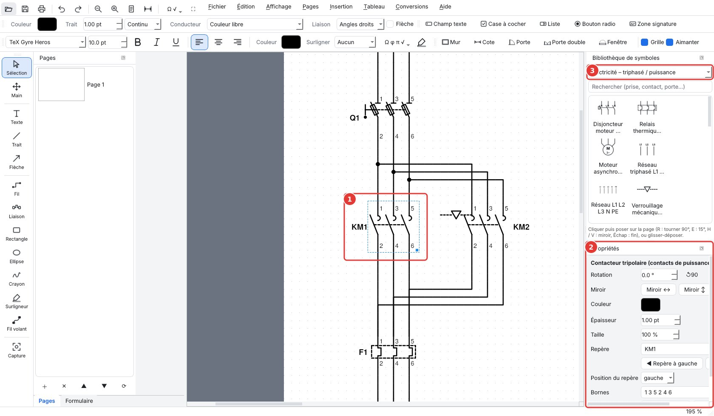
Un symbole sélectionné et ses propriétés
1Symbole sélectionné (cadre pointillé) : poignée bleue en bas à droite pour l'agrandir
2Rotation, miroir, couleur, épaisseur, taille, repère KM1 et sa position
3Choix de la catégorie de symboles
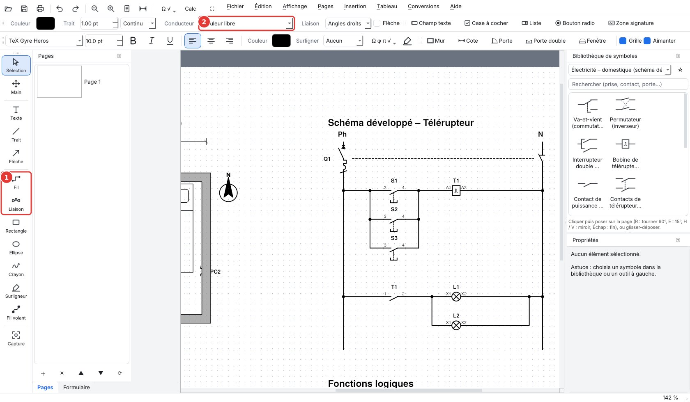
Fils, liaisons et couleurs de conducteurs
1Outils Fil et Liaison
2Couleur normalisée du conducteur
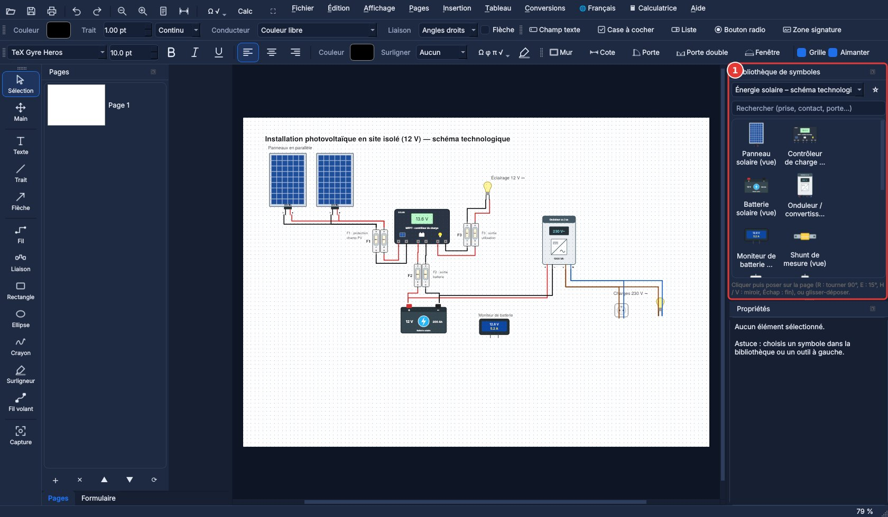
Installation solaire en site isolé : schéma technologique
1Catégories Énergie solaire de la bibliothèque
Organigramme d'entreprise pour le rapport de stage
2Clic droit sur un symbole : ajouter aux favoris ou les retirer
Équipements à états : station de pompage, réglages dans Propriétés
1Niveau du puits, niveau du château d'eau, pompe en marche ou arrêtée
6. Plans de logement
Régler l'échelle (1/50, 1/100…) et le pas de grille réel dans la barre Plan.
Outil Mur : un clic par angle, double-clic pour finir. Outils Porte, Porte double, Fenêtre : passer sur un mur, l'ouverture s'aligne et prend l'épaisseur du mur.
Outil Cote : glisser d'un point à l'autre, la longueur réelle s'affiche. Insertion › Cartouche ajoute le cartouche.
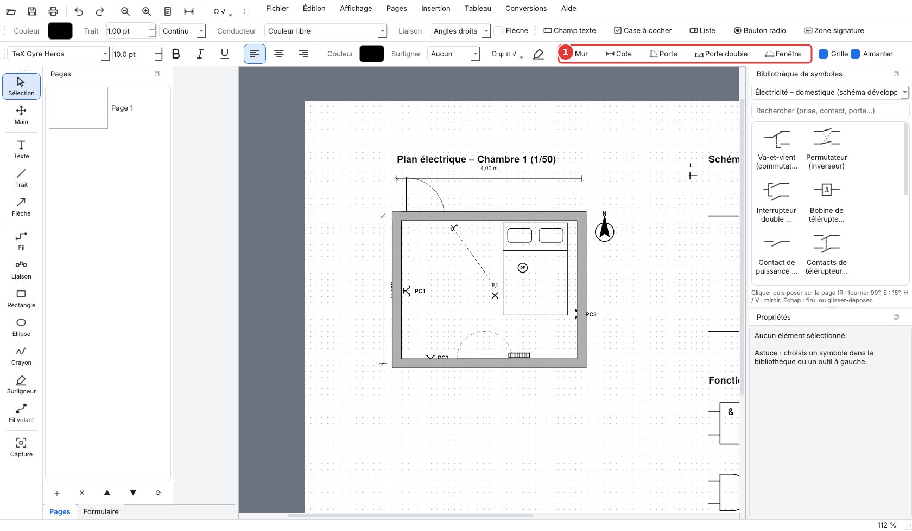
Plan d'une chambre au 1/50 : murs, porte, fenêtre, prises, cotes
1Outils Mur, Cote, Porte, Porte double, Fenêtre
7. GRAFCET, algorigramme, carte mentale
Poser une étape initiale, la sélectionner puis Ctrl+G : une transition et l'étape suivante sont ajoutées, reliées et numérotées.
Double-clic sur une forme pour écrire son texte. Choisir Liaison : courbe pour les cartes mentales, cocher Flèche pour les algorigrammes.
Barre Formulaire et signature : champ texte, case à cocher, liste, bouton radio, zone de signature, lien. Double-clic pour remplir ; panneau Formulaire pour tout voir.
Bouton Signature : dessiner ou importer sa signature, puis cliquer où la poser.
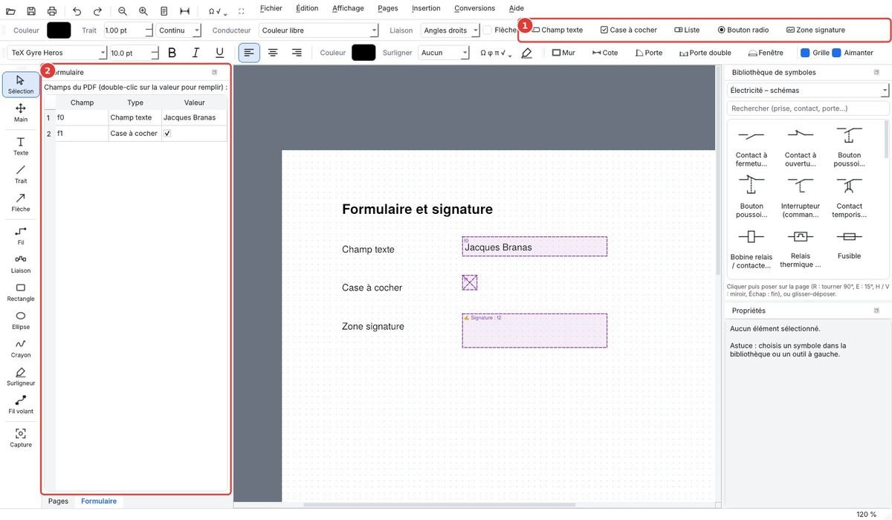
Champs de formulaire remplissables
1Barre Formulaire et signature
2Panneau Formulaire : tous les champs et leurs valeurs
Bouton Ω √ : Ω, φ, π, Δ, μ, °, ±… Écrire √{12,5} : la barre de la racine couvre tout le nombre.
Correcteur orthographique : dans la fenêtre de texte et dans les cases des tableaux, les mots inconnus sont soulignés en rouge. Clic droit sur un mot souligné : suggestions de correction, Ajouter au dictionnaire (mots techniques, noms propres) ou Ignorer. Réglages dans Affichage › Correcteur orthographique : activer ou non, langue (celle du logiciel ou une autre parmi les six), dictionnaire personnel. Fonctionne sans Internet.
Texte avec caractères spéciaux et racine sur tout le nombre
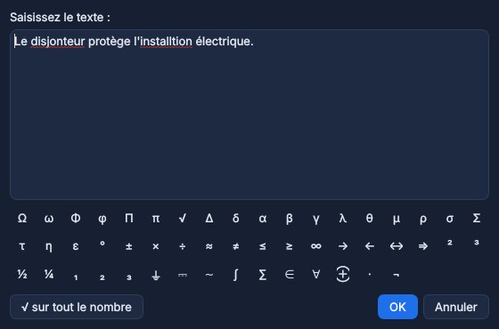
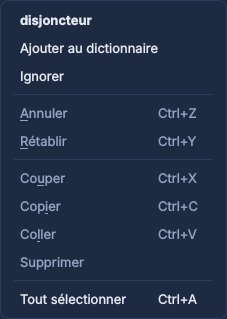
Correcteur orthographique : mots soulignés et suggestions au clic droit
10. Tableaux et calculatrice
Menu Tableau › Insérer un tableau… (Ctrl+Maj+T) : choisir le nombre de lignes et de colonnes. La première ligne peut servir d'en-tête (gras, colorée).
Double-clic sur le tableau pour l'éditer : ajouter ou supprimer des lignes et des colonnes, fusionner ou scinder des cases, régler la taille du texte, l'alignement et la couleur de l'en-tête. Le tableau se redimensionne avec la poignée bleue.
Calculs comme dans un tableur : une case qui commence par = est une formule. Exemples : =B2*C2, =B3 x C3, =(A1+A2)/2, =√(144), =A1^2, =SOMME(D2:D4), =MOYENNE(B2:B6), =MAX(…), =MIN(…). Le résultat s'affiche dans la page et se met à jour quand les cases changent.
Menu Tableau › Calculatrice scientifique et graphique… (Ctrl+K) : une fenêtre à part avec les fonctions sin, cos, tan, ln, log, √, puissances, π, en degrés ou en radians, et l'historique des calculs. La calculatrice s'ouvre aussi avec le bouton Calc de la barre du haut.
Onglet Graphique : tracer jusqu'à trois courbes (ex. x^2 - 4, 2x + 1, 3sin(x)), zoomer à la molette, déplacer en glissant, puis Insérer le graphique dans la page.
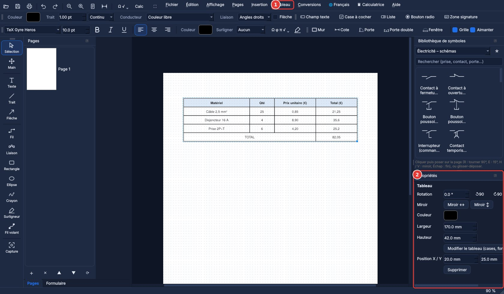
Un tableau avec calculs : les totaux sont des formules
1Menu Tableau
2Taille du tableau et bouton « Modifier le tableau »
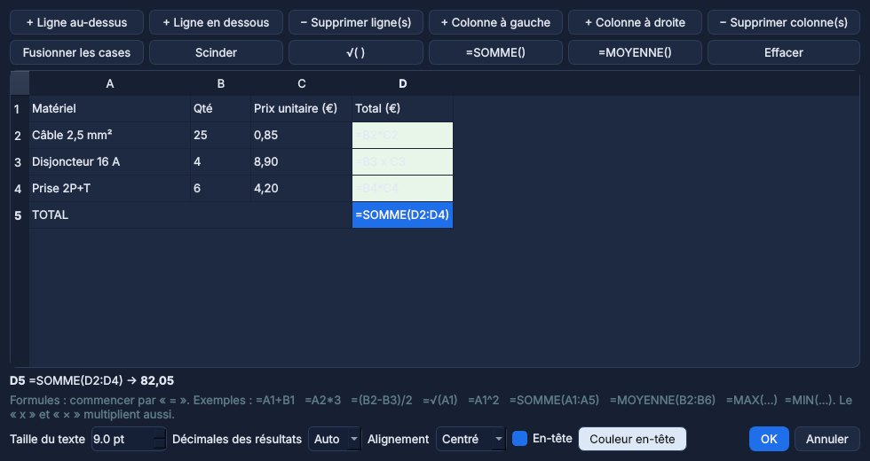
L'édition du tableau (double-clic) : lignes, colonnes, fusion, formules
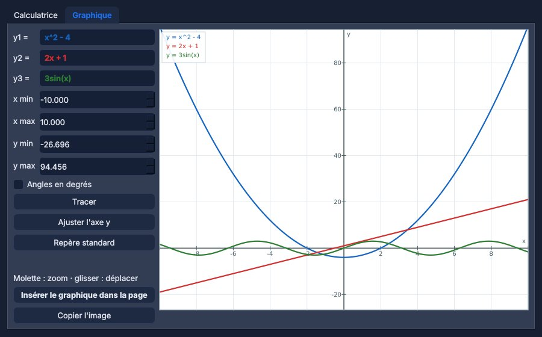
La calculatrice scientifique et son onglet Graphique
11. Conversions
Menu Conversions : Word / ODT → PDF, PDF → Word, PDF → ODT, Word ↔ ODT, images → PDF, pages → PNG.
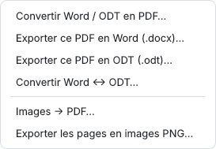
Le menu Conversions
12. Soutenir le projet
PDF DUO est gratuit et libre (licence GNU GPL v3). Un don sur ko-fi.com/djlatinjazz aide à le faire évoluer (Aide › Faire un don).
Site : deltapassion.github.io/PDF-DUO — Contact : deltapassion@gmx.com
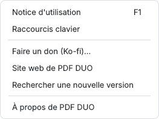
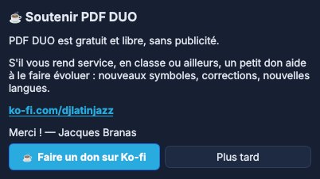
Menu Aide et fenêtre de don
User guide
PDF, electrical diagrams, GRAFCET and floor plans — free software
PDF DUO lets you read, fill in and sign PDFs, draw electrical, pneumatic and network diagrams, GRAFCETs and floor plans, and convert Word / ODF ↔ PDF. It is designed for students and teachers in all vocational courses (for example electrical, IT, dental technician, logistics, warehouse), and is also handy for school life: posters, membership forms and signed documents for the student association. The red numbers on the screenshots refer to the lists below them.
1. Installation
Windows: run the installer PDF-DUO-Windows-Setup.exe, or unzip PDF-DUO-Windows.zip and open PDF DUO.exe.
Linux: double-click pdf-duo_amd64.deb (Debian, Ubuntu, Mint), or use the AppImage (make it executable, then open it).
macOS: pick the Apple Silicon (M1, M2…) or Intel version, unzip, drag “PDF DUO” to Applications. First launch: right-click › Open.
Word → PDF conversions: PDF DUO uses LibreOffice if installed (most faithful, free), otherwise Microsoft Word, otherwise its own converter (simplified layout). ODT files need LibreOffice.
2. The window
Top, left of the menus: open, save, print, undo ↶ / redo ↷, zoom − / +, whole page, special characters Ω √.
Right: the symbol library (choose a category or type a word to search) and the Properties panel of the selected item.
View › Palettes shows or hides each panel; View › Theme and Language change the look and language.
Presentation mode (F11 key or ⛶ button): full screen; only the tools on the left and the library on the right stay visible; menus and zoom reappear when the mouse touches the top of the screen, Esc to exit.
To project a diagram in class or work with nothing around, switch to presentation mode: the page fills the screen. The toolbar on the left (select, text, line, arrow, wire, shapes, pencil, highlighter) and the library on the right, narrowed to two columns, stay visible: you can still write and place symbols.
To enter it: press F11, or the ⛶ button in the top bar, or the menu View › Presentation mode (full screen).
During the presentation: Ctrl + wheel to zoom, wheel to scroll. Move the mouse to the very top of the screen: the menus and the quick bar (zoom − / +, whole page, undo) reappear, then hide when the mouse moves down.
To leave it: press Esc (or F11 again). Palettes and toolbars come back as before. If a drawing tool is in use, the first Esc ends it and the second leaves full screen.
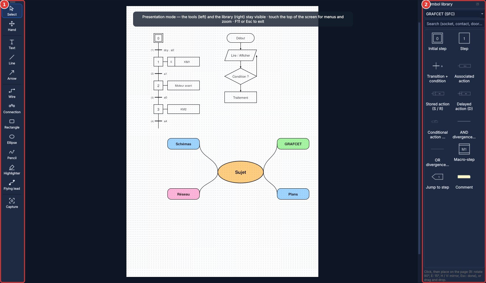
Presentation mode: the page full screen, with the tools and the library
1Writing and drawing tools
2Library narrowed to two columns
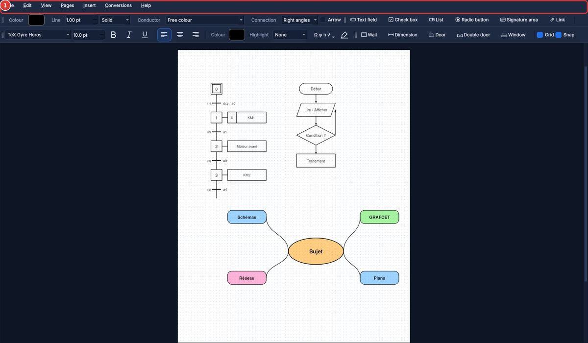
Mouse at the top of the screen: menus and zoom reappear
1Menus and quick bar: zoom − / +, whole page, undo, ⛶ to exit
4. Opening and saving
File › Open accepts PDFs, Word / ODT documents (converted automatically) and images.
Drawings are saved as vectors in the PDF. When the file is reopened in PDF DUO, everything stays editable.
File › Export a final PDF produces a flattened PDF to hand out.
5. Drawing a diagram
Click a symbol in the library, then click on the page to place it (or drag and drop). Esc to finish.
Favourites: right-click a symbol › Add to favourites. It gets a ★ star, moves to the top of its category and appears in the ★ Favourites category at the top of the list, which opens at start-up. Right-click › Remove from favourites to take it out. Favourites are kept between sessions. The ☆ button next to the list makes a whole library a favourite: it moves to the top of the list. Right-click an item on the page: bring to front, send to back, rotate, mirror, copy, duplicate, delete, favourites.
R rotates 90°, E 15° (Shift = other way), H / V mirror. Exact angle in Properties.
The blue handle at the bottom right enlarges the item proportionally.
The label (KM1, S1…) and terminal numbers are edited in Properties; “Label on the left / right” buttons.
Wire tool: one click per corner; clicking a terminal (small circle) attaches the wire. Connection tool: click two terminals and the route is drawn. Wires follow moved symbols.
Conductor list: standard colours (phase, blue neutral, green/yellow earth, fibre, Ethernet…). Junction dots are placed automatically.
Solar energy: two categories. Solar energy – symbols for the standard diagram (PV cell and module, inverter, MPPT / PWM charge controller, 2 / 6 / 12 / 24 / 48 V battery, shunt, DC ammeter and voltmeter, Wh meter, gPV fuse, DC disconnector, surge protector, MC4). Solar energy – wiring diagram to draw an off-grid installation with real-looking equipment (panel, charge controller, battery, inverter, monitor, loads), connecting their terminals with red and black wires. Example supplied: exemple-solaire.pdf.
Backup sources: wind turbine (with charge controller and dump load), generator set and car or boat alternator, as symbols and realistic pictures. The 2-pole fuse holders (picture) protect the PV array, the battery output and the load output, as in the example.
Organisation chart (internship report): Insert › Company organisation chart places a ready-linked chart (management, departments, supervisor, intern); double-click a box to type the names. The boxes of the Organisation chart category let you extend it.
Libraries added in 1.2.0: Electrical safety (PPE, insulating and collective equipment: helmet, insulating gloves, mat, lockout padlock, voltage tester, barriers, earthing device), Handling (packaging symbols), Safety (signs, GHS hazardous substances), Logistics, Dental technician and Tools for electricians, mechanics and IT (RJ45 crimper, connectors, tester…). Original drawings, free to use. Also: Working at height (scaffolding, podium, stepladder, aerial platforms), 1000 V insulated tools, dental chart with FDI numbering and removable dentures.
Libraries added in 1.3.0: Life-saving actions, Basic biology, Robotics (Arduino, Raspberry Pi with GPIO pinout, micro:bit, sensors and modules; adjustable LED colour and resistor bands, colour code chart), Fire safety (equipment and signs), Industrial equipment, Housing (utility duct, heating, lighting, charging points) and Security careers (firefighters, security, police).
Equipment with states: for the barrier, belt conveyor, hoist, lift, pump, tanks, cylinders, sensors, robot arm… the position or state is set in Properties (barrier up, middle or down, water level, pump running, rod extended…). Each step of a cycle can be shown, for example for a GRAFCET. Examples provided: exemple-pompage.pdf, exemple-parking.pdf, exemple-premiers-secours.pdf.
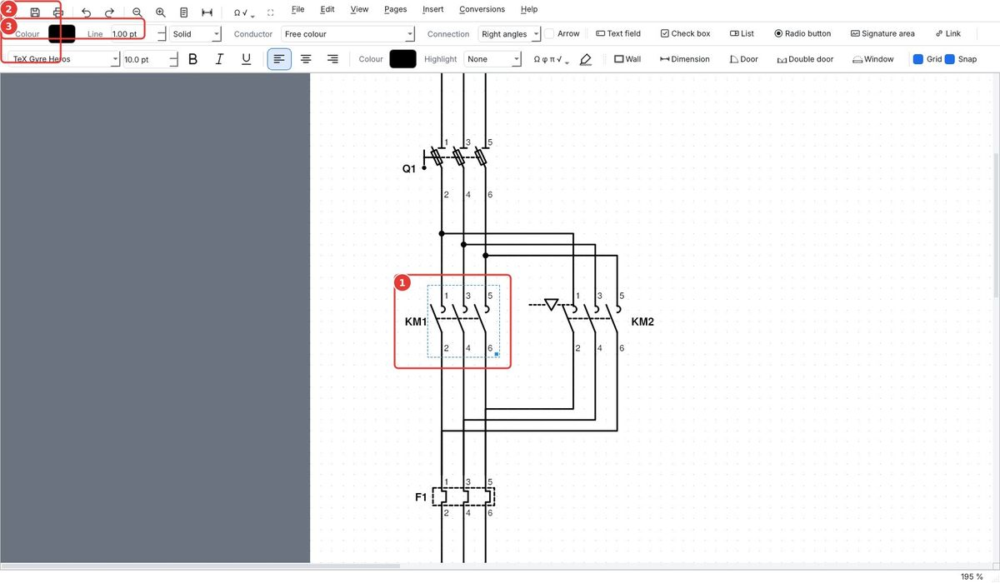
A selected symbol and its properties
1Selected symbol (dotted frame): blue handle at the bottom right to enlarge it
2Rotation, mirror, colour, width, size, KM1 label and its position
3Choice of the symbol category
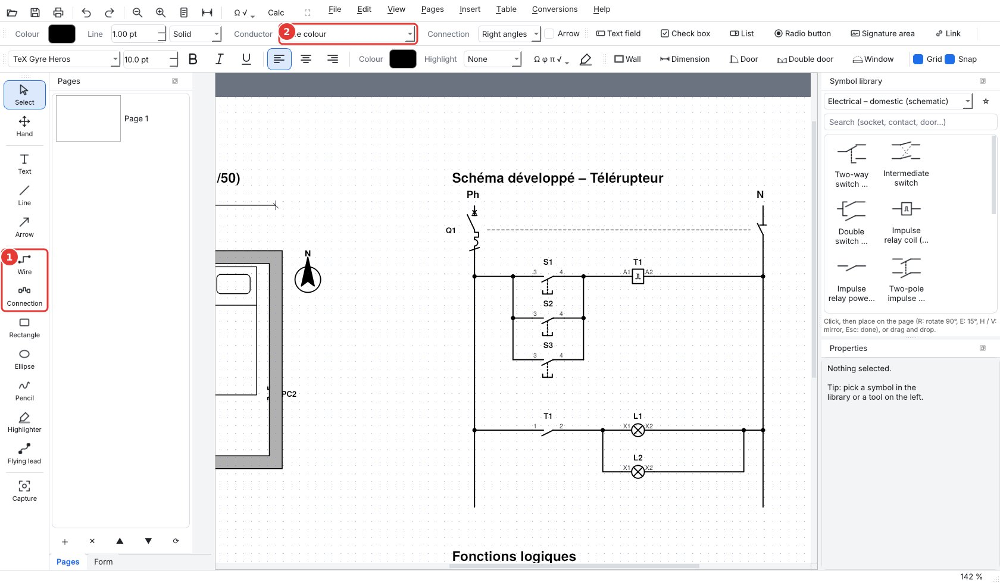
Wires, connections and conductor colours
1Wire and Connection tools
2Standard conductor colour
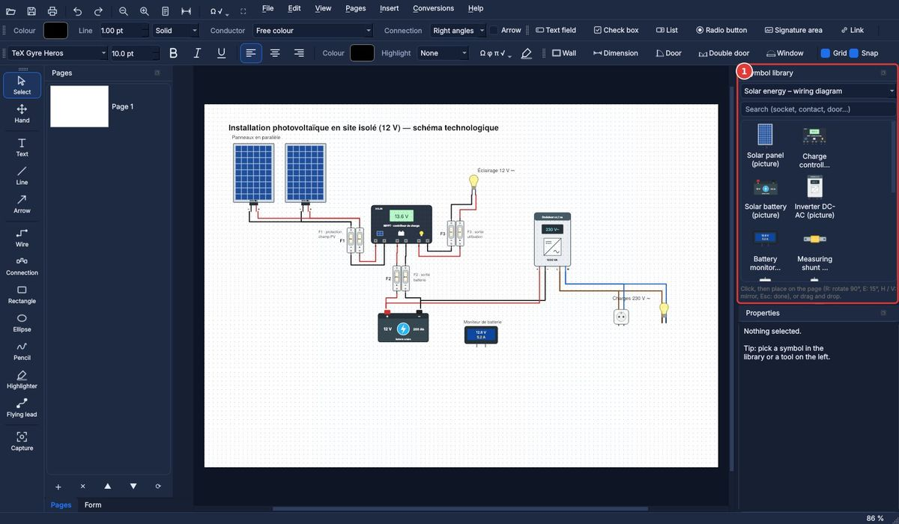
Off-grid solar installation: wiring diagram
1Solar energy categories of the library
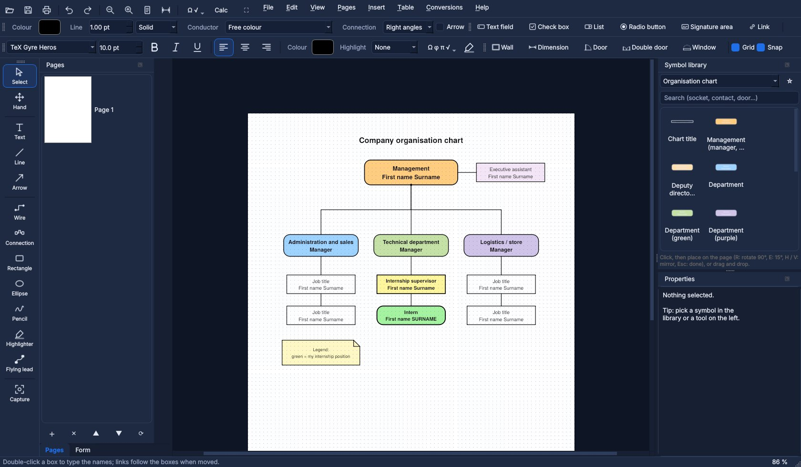
Company organisation chart for the internship report
2Right-click a symbol: add to or remove from favourites
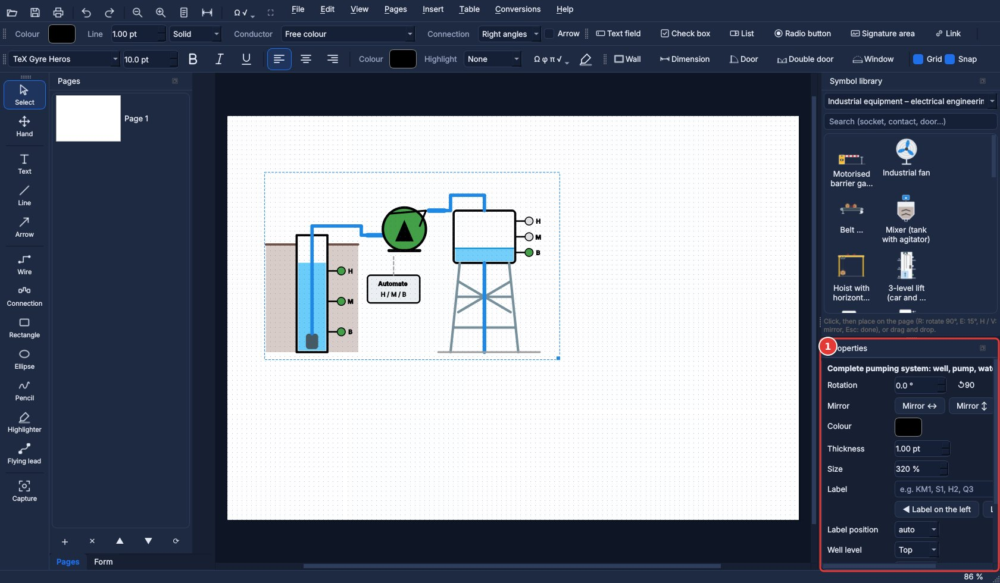
Equipment with states: pumping station, settings in Properties
1Well level, water tower level, pump running or stopped
6. Floor plans
Set the scale (1/50, 1/100…) and the real grid step in the Plan toolbar.
Wall tool: one click per corner, double-click to finish. Door, Double door, Window tools: move over a wall and the opening aligns and takes the wall thickness.
Dimension tool: drag from point to point, the real length is shown. Insert › Title block adds the title block.
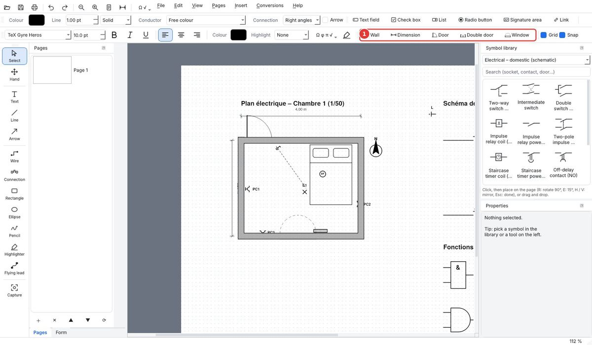
Plan of a bedroom at 1:50: walls, door, window, sockets, dimensions
1Wall, Dimension, Door, Double door, Window tools
7. GRAFCET, flowcharts, mind maps
Place an initial step, select it, then press Ctrl+G: a transition and the next step are added, connected and numbered.
Double-click a shape to type its text. Choose Connection: curved for mind maps, tick Arrow for flowcharts.
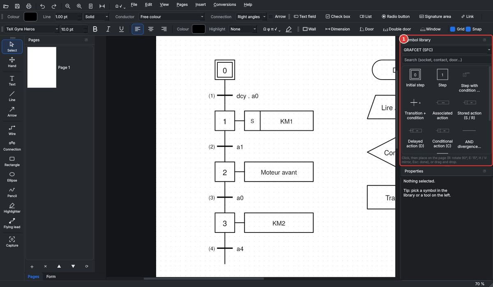
A GRAFCET: steps, transitions, actions
1GRAFCET category of the library
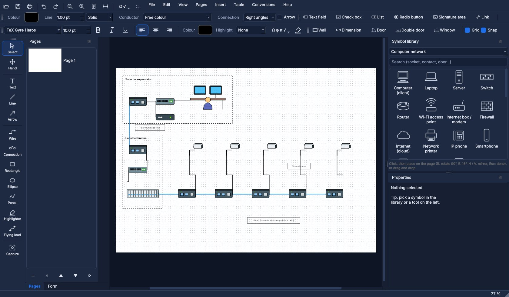
CIEL network diagram (CCTV, fibre) — midnight blue theme
8. Forms and signature
Form and signature toolbar: text field, check box, list, radio button, signature area, link. Double-click to fill in; the Form panel lists everything.
Signature button: draw or import your signature, then click where to place it.
Ω √ button: Ω, φ, π, Δ, μ, °, ±… Type √{12.5}: the root bar covers the whole number.
Spell checker: in the text window and in table cells, unknown words are underlined in red. Right-click an underlined word: correction suggestions, Add to dictionary (technical terms, proper names) or Ignore. Settings in View › Spell checker: on or off, language (the program's or any of the six), personal dictionary. Works offline.
Text with special characters and a root over the whole number
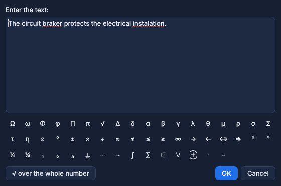
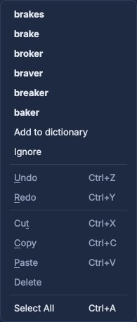
Spell checker: underlined words and right-click suggestions
10. Tables and calculator
Table › Insert a table… menu (Ctrl+Shift+T): choose the number of rows and columns. The first row can be a header (bold, coloured).
Double-click the table to edit it: add or delete rows and columns, merge or split cells, set the text size, alignment and header colour. Resize the table with the blue handle.
Spreadsheet-style calculations: a cell starting with = is a formula. Examples: =B2*C2, =B3 x C3, =(A1+A2)/2, =√(144), =A1^2, =SUM(D2:D4), =AVERAGE(B2:B6), =MAX(…), =MIN(…). The result is shown on the page and updates when the cells change.
Table › Scientific graphing calculator… menu (Ctrl+K): a separate window with sin, cos, tan, ln, log, √, powers, π, in degrees or radians, and a history of calculations. The calculator also opens with the Calc button in the top bar.
Graph tab: plot up to three curves (e.g. x^2 - 4, 2x + 1, 3sin(x)), zoom with the wheel, pan by dragging, then Insert the graph in the page.
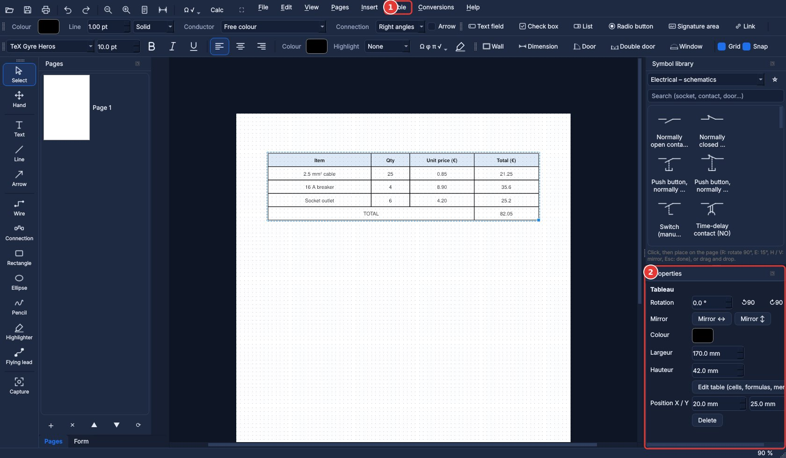
A table with calculations: the totals are formulas
1Table menu
2Table size and “Edit table” button
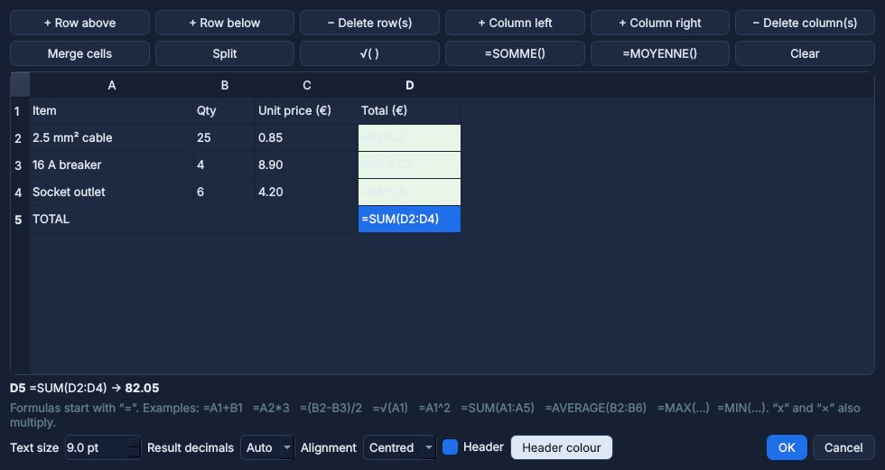
Editing the table (double-click): rows, columns, merge, formulasThe scientific calculator and its Graph tab
11. Conversions
Conversions menu: Word / ODT → PDF, PDF → Word, PDF → ODT, Word ↔ ODT, images → PDF, pages → PNG.
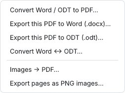
The Conversions menu
12. Support the project
PDF DUO is free software (GNU GPL v3). A donation at ko-fi.com/djlatinjazz helps it grow (Help › Donate).
PDF, esquemas eléctricos, GRAFCET y planos — software libre
PDF DUO sirve para leer, rellenar y firmar PDF, dibujar esquemas eléctricos, neumáticos y de red, GRAFCET y planos de vivienda, y convertir Word / ODF ↔ PDF. Está pensado para alumnos y profesores de todas las ramas de formación profesional (por ejemplo electricidad, informática, prótesis dental, logística, almacén), y también es útil para la vida del centro: carteles, fichas de inscripción y documentos firmados de la asociación de alumnos. Los números rojos de las capturas remiten a las listas de debajo.
1. Instalación
Windows: ejecutar el instalador PDF-DUO-Windows-Setup.exe, o descomprimir PDF-DUO-Windows.zip y abrir PDF DUO.exe.
Linux: doble clic en pdf-duo_amd64.deb (Debian, Ubuntu, Mint), o usar la AppImage (hacerla ejecutable y abrirla).
macOS: elegir la versión Apple Silicon (M1, M2…) o Intel, descomprimir y arrastrar «PDF DUO» a Aplicaciones. Primer inicio: clic derecho › Abrir.
Conversiones Word → PDF: PDF DUO usa LibreOffice si está instalado (lo más fiel, gratuito), si no Microsoft Word, y si no su propia conversión (diseño simplificado). Los archivos ODT necesitan LibreOffice.
2. La pantalla
Arriba, a la izquierda de los menús: abrir, guardar, imprimir, deshacer ↶ / rehacer ↷, zoom − / +, página completa, caracteres especiales Ω √.
A la izquierda: las herramientas (selección, texto, trazo, cable, conexión, formas, lápiz, resaltador, cable volante, captura).
A la derecha: la biblioteca de símbolos (elegir una categoría o buscar una palabra) y el panel Propiedades del elemento seleccionado.
Ver › Paletas muestra u oculta cada panel; Ver › Tema e Idioma cambian el aspecto y el idioma.
Modo presentación (tecla F11 o botón ⛶): pantalla completa; solo quedan visibles las herramientas a la izquierda y la biblioteca a la derecha; los menús y el zoom reaparecen al tocar el borde superior con el ratón, Esc para salir.
4Color, grosor, conductor, tipo de conexión, flecha
5Paleta de escritura: fuente, tamaño, negrita, color, resaltador
6Biblioteca de símbolos (categorías y búsqueda)
7Propiedades del elemento seleccionado
8Páginas (miniaturas) y pestaña Formulario
9La página de trabajo
3. Modo presentación (pantalla completa)
Para proyectar un esquema en clase o trabajar sin nada alrededor, pase al modo presentación: la página ocupa toda la pantalla. Siguen visibles la barra de herramientas de la izquierda (selección, texto, trazo, flecha, cable, formas, lápiz, resaltador) y la biblioteca a la derecha, reducida a dos columnas: se puede seguir escribiendo y colocando símbolos.
Para entrar: tecla F11, o botón ⛶ de la barra superior, o menú Ver › Modo presentación (pantalla completa).
Durante la presentación: Ctrl + rueda para hacer zoom, rueda para desplazarse. Lleve el ratón al borde superior de la pantalla: los menús y la barra rápida (zoom − / +, página completa, deshacer) reaparecen y se ocultan al bajar el ratón.
Para salir: tecla Esc (o F11 de nuevo). Las paletas y barras vuelven como antes. Si hay una herramienta de dibujo en curso, la primera pulsación de Esc la termina y la segunda sale de la pantalla completa.
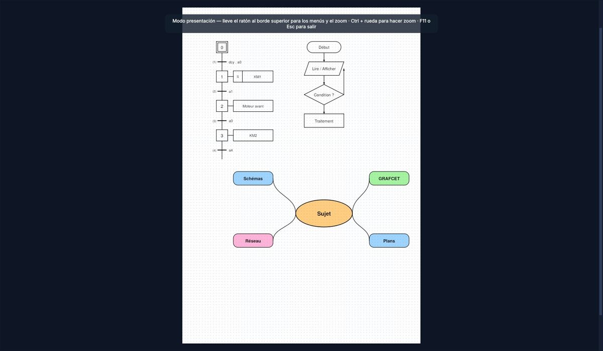
Modo presentación: la página a pantalla completa, con las herramientas y la biblioteca
1Herramientas de escritura y dibujo
2Biblioteca reducida a dos columnas
Ratón en el borde superior: reaparecen los menús y el zoom
1Menús y barra rápida: zoom − / +, página completa, deshacer, ⛶ para salir
4. Abrir y guardar
Archivo › Abrir acepta PDF, documentos Word / ODT (convertidos automáticamente) e imágenes.
Los dibujos se guardan en vectorial en el PDF. Al reabrirlo en PDF DUO, todo sigue siendo editable.
Archivo › Exportar un PDF final genera un PDF aplanado para distribuir.
5. Dibujar un esquema
Hacer clic en un símbolo de la biblioteca y luego en la página para colocarlo (o arrastrar y soltar). Esc para terminar.
Favoritos: clic derecho en un símbolo › Añadir a favoritos. Recibe una estrella ★, pasa al principio de su categoría y aparece en la categoría ★ Favoritos, arriba de la lista, que se abre al iniciar. Clic derecho › Quitar de favoritos para retirarlo. Los favoritos se conservan de una sesión a otra. El botón ☆ junto a la lista marca una biblioteca entera como favorita: pasa al principio de la lista. Clic derecho en un elemento de la página: primer plano, fondo, rotación, espejo, copiar, duplicar, eliminar, favoritos.
R gira 90°, E 15° (Mayús = sentido inverso), H / V hacen espejo. Ángulo exacto en Propiedades.
El tirador azul abajo a la derecha amplía el elemento manteniendo sus proporciones.
La referencia (KM1, S1…) y los números de bornes se editan en Propiedades.
Herramienta Cable: un clic por esquina; un clic en un borne (pequeño círculo) conecta el cable. Herramienta Conexión: hacer clic en dos bornes y el trazado se hace solo. Los cables siguen a los símbolos.
Lista Conductor: colores normalizados (fase, neutro azul, tierra verde/amarillo, fibra, Ethernet…). Los puntos de unión se colocan solos.
Energía solar: dos categorías. Energía solar – símbolos para el esquema normalizado (célula y módulo FV, inversor, regulador MPPT / PWM, batería 2 / 6 / 12 / 24 / 48 V, shunt, amperímetro y voltímetro de continua, contador Wh, fusible gPV, seccionador DC, protector de sobretensiones, MC4). Energía solar – esquema tecnológico para dibujar una instalación aislada con los aparatos reales (panel, regulador, batería, inversor, monitor, cargas), uniendo sus bornes con cables rojos y negros. Ejemplo incluido: exemple-solaire.pdf.
Fuentes de apoyo: aerogenerador (con regulador y resistencia de disipación), grupo electrógeno y alternador de coche o barco, en símbolo y en vista realista. Los portafusibles de 2 polos (vista) protegen el campo FV, la salida de batería y la salida de consumo, como en el ejemplo.
Organigrama (informe de prácticas): Insertar › Organigrama de empresa coloca un organigrama ya conectado (dirección, departamentos, tutor, alumno en prácticas); doble clic en una casilla para escribir los nombres. Las casillas de la categoría Organigrama permiten ampliarlo.
Bibliotecas añadidas en la 1.2.0: Prevención eléctrica (EPI, equipos aislantes y colectivos: casco, guantes aislantes, alfombra, candado de consignación, verificador de tensión, balizamiento, puesta a tierra), Manipulación (pictogramas de embalaje), Seguridad (señalización, productos peligrosos SGA), Logística, Protésico dental y Herramientas de electricista, mecánico e informática (crimpadora RJ45, conectores, comprobador…). Dibujos originales, de uso libre. También: Trabajo en altura (andamio, plataforma, escalera, plataformas elevadoras), herramientas aisladas 1000 V, odontograma con numeración FDI y prótesis removibles.
Bibliotecas añadidas en la 1.3.0: Gestos que salvan, Biología básica, Robótica (Arduino, Raspberry Pi con patillaje GPIO, micro:bit, sensores y módulos; LED de color y resistencia con bandas ajustables, código de colores), Seguridad contra incendios (equipos y señalización), Equipos industriales, Vivienda (canaleta técnica, calefacción, iluminación, puntos de recarga) y Oficios de la seguridad (bomberos, vigilancia, policía).
Equipos con estados: para la barrera, la cinta transportadora, el montacargas, el ascensor, la bomba, los depósitos, los cilindros, los sensores, el brazo manipulador… la posición o el estado se ajusta en Propiedades (barrera arriba, en medio o abajo, nivel de agua, bomba en marcha, vástago extendido…). Así se muestra cada etapa de un ciclo, por ejemplo para un GRAFCET. Ejemplos: exemple-pompage.pdf, exemple-parking.pdf, exemple-premiers-secours.pdf.
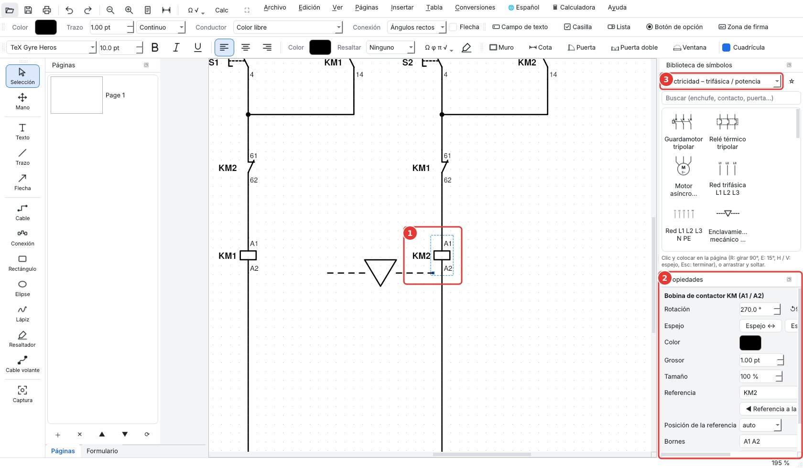
Un símbolo seleccionado y sus propiedades
1Símbolo seleccionado (marco punteado): tirador azul abajo a la derecha para ampliarlo
2Rotación, espejo, color, grosor, tamaño, referencia KM1 y su posición
3Elección de la categoría de símbolos
Cables, conexiones y colores de conductores
1Herramientas Cable y Conexión
2Color normalizado del conductor
Instalación solar aislada: esquema tecnológico
1Categorías Energía solar de la biblioteca
Organigrama de empresa para el informe de prácticasPrevención eléctrica, manipulación, logística, dental, herramientas
1Elegir la categoría en la biblioteca
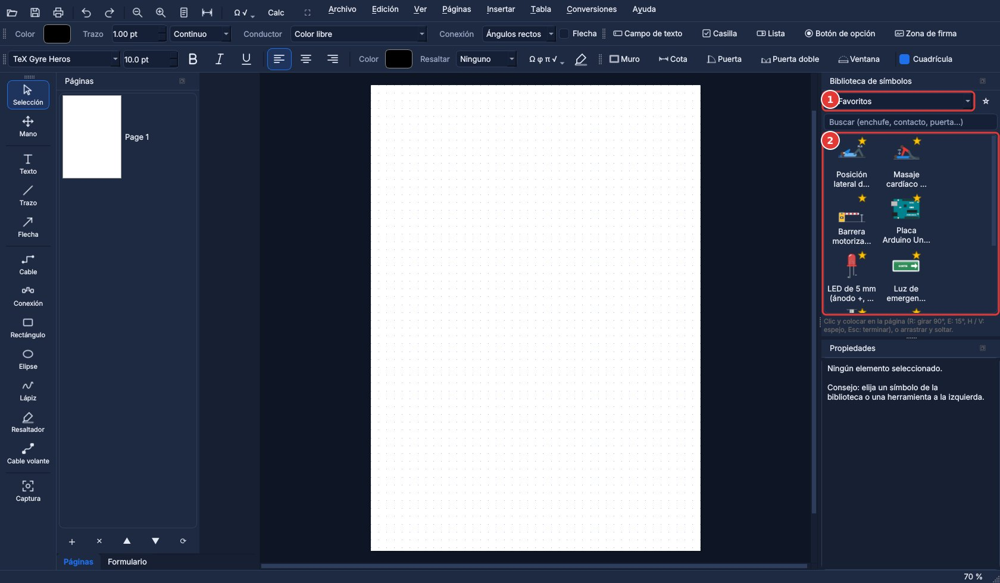
Los favoritos al principio de la biblioteca
1Categoría ★ Favoritos
2Clic derecho en un símbolo: añadir o quitar de favoritos
Equipos con estados: estación de bombeo, ajustes en Propiedades
1Nivel del pozo, nivel del depósito, bomba en marcha o parada
6. Planos de vivienda
Ajustar la escala (1/50, 1/100…) y el paso de cuadrícula real en la barra Plano.
Herramienta Muro: un clic por esquina, doble clic para terminar. Puerta, Puerta doble, Ventana: pasar sobre un muro y la abertura se alinea sola.
Herramienta Cota: arrastrar de un punto a otro, se muestra la longitud real. Insertar › Cajetín añade el cajetín.
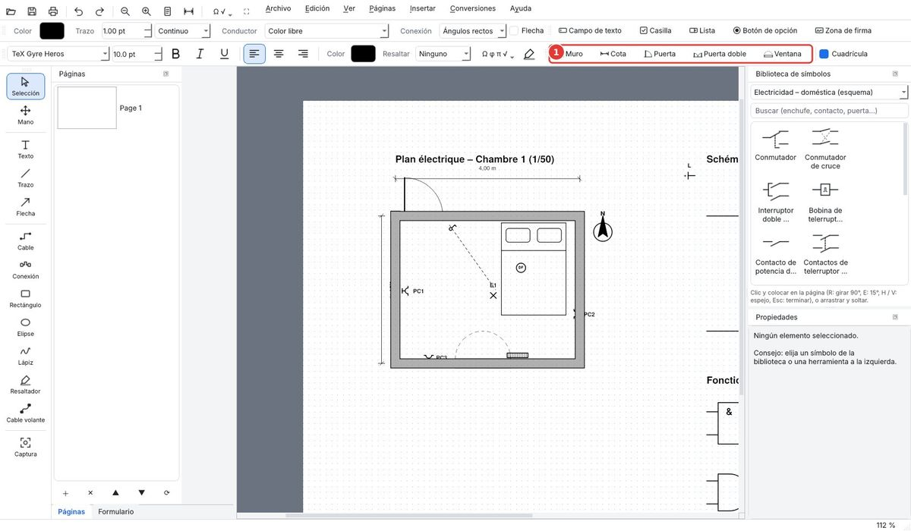
Plano de un dormitorio a 1/50: muros, puerta, ventana, enchufes, cotas
Botón Ω √: Ω, φ, π, Δ, μ, °, ±… Escribir √{12,5}: la barra de la raíz cubre todo el número.
Corrector ortográfico: en la ventana de texto y en las celdas de las tablas, las palabras desconocidas se subrayan en rojo. Clic derecho en una palabra subrayada: sugerencias, Añadir al diccionario (términos técnicos, nombres propios) o Ignorar. Ajustes en Ver › Corrector ortográfico: activar o no, idioma (el del programa u otro de los seis), diccionario personal. Funciona sin Internet.
Texto con caracteres especiales y raíz sobre todo el númeroCorrector ortográfico: palabras subrayadas y sugerencias con clic derecho
10. Tablas y calculadora
Menú Tabla › Insertar una tabla… (Ctrl+Mayús+T): elegir el número de filas y columnas. La primera fila puede ser un encabezado (negrita, en color).
Doble clic en la tabla para editarla: añadir o eliminar filas y columnas, combinar o dividir celdas, ajustar el tamaño del texto, la alineación y el color del encabezado. La tabla se redimensiona con el tirador azul.
Cálculos como en una hoja de cálculo: una celda que empieza por = es una fórmula. Ejemplos: =B2*C2, =B3 x C3, =(A1+A2)/2, =√(144), =A1^2, =SUM(D2:D4), =AVERAGE(B2:B6), =MAX(…), =MIN(…). El resultado aparece en la página y se actualiza cuando cambian las celdas.
Menú Tabla › Calculadora científica y gráfica… (Ctrl+K): una ventana aparte con sin, cos, tan, ln, log, √, potencias, π, en grados o radianes, e historial de cálculos. La calculadora también se abre con el botón Calc de la barra superior.
Pestaña Gráfico: trazar hasta tres curvas (p. ej. x^2 - 4, 2x + 1, 3sin(x)), ampliar con la rueda, desplazar arrastrando y luego Insertar el gráfico en la página.
Una tabla con cálculos: los totales son fórmulas
1Menú Tabla
2Tamaño de la tabla y botón «Editar la tabla»
Edición de la tabla (doble clic): filas, columnas, combinar, fórmulasLa calculadora científica y su pestaña Gráfico
11. Conversiones
Menú Conversiones: Word / ODT → PDF, PDF → Word, PDF → ODT, Word ↔ ODT, imágenes → PDF, páginas → PNG.
El menú Conversiones
12. Apoyar el proyecto
PDF DUO es gratuito y libre (GNU GPL v3). Una donación en ko-fi.com/djlatinjazz ayuda a mejorarlo (Ayuda › Donar).
PDF, esquemas elétricos, GRAFCET e plantas — software livre
O PDF DUO serve para ler, preencher e assinar PDF, desenhar esquemas elétricos, pneumáticos e de rede, GRAFCET e plantas de habitação, e converter Word / ODF ↔ PDF. Foi pensado para alunos e professores de todos os cursos profissionais (por exemplo eletricidade, informática, prótese dentária, logística, armazém), e também é útil para a vida da escola: cartazes, fichas de inscrição e documentos assinados da associação de estudantes. Os números vermelhos das capturas remetem para as listas abaixo.
1. Instalação
Windows: executar o instalador PDF-DUO-Windows-Setup.exe, ou descomprimir PDF-DUO-Windows.zip e abrir PDF DUO.exe.
Linux: duplo clique em pdf-duo_amd64.deb (Debian, Ubuntu, Mint), ou usar a AppImage (torná-la executável e abri-la).
macOS: escolher a versão Apple Silicon (M1, M2…) ou Intel, descomprimir e arrastar «PDF DUO» para Aplicações. Primeiro arranque: clique direito › Abrir.
Conversões Word → PDF: o PDF DUO usa o LibreOffice se estiver instalado (o mais fiel, gratuito), senão o Microsoft Word, senão a sua própria conversão (paginação simplificada). Os ficheiros ODT precisam do LibreOffice.
2. O ecrã
Em cima, à esquerda dos menus: abrir, guardar, imprimir, desfazer ↶ / refazer ↷, zoom − / +, página inteira, caracteres especiais Ω √.
À esquerda: as ferramentas (seleção, texto, traço, fio, ligação, formas, lápis, marcador, fio solto, captura).
À direita: a biblioteca de símbolos (escolher uma categoria ou pesquisar) e o painel Propriedades do elemento selecionado.
Exibir › Paletas mostra ou oculta cada painel; Exibir › Tema e Idioma mudam o aspeto e o idioma.
Modo de apresentação (tecla F11 ou botão ⛶): ecrã inteiro; só as ferramentas à esquerda e a biblioteca à direita ficam visíveis; os menus e o zoom reaparecem quando o rato toca no topo do ecrã, Esc para sair.
5Paleta de escrita: tipo de letra, tamanho, negrito, cor, marcador
6Biblioteca de símbolos (categorias e pesquisa)
7Propriedades do elemento selecionado
8Páginas (miniaturas) e separador Formulário
9A página de trabalho
3. Modo de apresentação (ecrã inteiro)
Para projetar um esquema na aula ou trabalhar sem nada à volta, passe para o modo de apresentação: a página ocupa todo o ecrã. Ficam visíveis a barra de ferramentas da esquerda (seleção, texto, traço, seta, fio, formas, lápis, marcador) e a biblioteca à direita, reduzida a duas colunas: pode continuar a escrever e a colocar símbolos.
Para entrar: tecla F11, ou botão ⛶ na barra superior, ou menu Exibir › Modo de apresentação (ecrã inteiro).
Durante a apresentação: Ctrl + roda para ampliar, roda para deslocar. Leve o rato ao topo do ecrã: os menus e a barra rápida (zoom − / +, página inteira, desfazer) reaparecem e escondem-se quando o rato desce.
Para sair: tecla Esc (ou F11 outra vez). As paletas e barras voltam como antes. Se uma ferramenta de desenho estiver em curso, o primeiro Esc termina-a e o segundo sai do ecrã inteiro.
Modo de apresentação: a página em ecrã inteiro, com as ferramentas e a biblioteca
1Ferramentas de escrita e desenho
2Biblioteca reduzida a duas colunas
Rato no topo do ecrã: os menus e o zoom reaparecem
1Menus e barra rápida: zoom − / +, página inteira, desfazer, ⛶ para sair
4. Abrir e guardar
Arquivo › Abrir aceita PDF, documentos Word / ODT (convertidos automaticamente) e imagens.
Os desenhos ficam guardados em vetorial no PDF. Ao reabrir no PDF DUO, tudo continua editável.
Arquivo › Exportar um PDF final produz um PDF achatado para distribuir.
5. Desenhar um esquema
Clicar num símbolo da biblioteca e depois na página para o colocar (ou arrastar e largar). Esc para terminar.
Favoritos: clique direito num símbolo › Adicionar aos favoritos. Recebe uma estrela ★, passa para o início da sua categoria e aparece na categoria ★ Favoritos, no topo da lista, que abre no arranque. Clique direito › Remover dos favoritos para o retirar. Os favoritos são guardados de uma sessão para a outra. O botão ☆ ao lado da lista marca uma biblioteca inteira como favorita: passa para o topo da lista. Clique direito num elemento da página: primeiro plano, segundo plano, rotação, espelho, copiar, duplicar, eliminar, favoritos.
R roda 90°, E 15° (Shift = sentido inverso), H / V espelham. Ângulo exato em Propriedades.
A pega azul em baixo à direita amplia o elemento mantendo as proporções.
A referência (KM1, S1…) e os números dos terminais editam-se em Propriedades.
Ferramenta Fio: um clique por canto; um clique num terminal (pequeno círculo) liga o fio. Ferramenta Ligação: clicar em dois terminais e o traçado faz-se sozinho. Os fios seguem os símbolos.
Lista Condutor: cores normalizadas (fase, neutro azul, terra verde/amarelo, fibra, Ethernet…). Os pontos de junção colocam-se sozinhos.
Energia solar: duas categorias. Energia solar – símbolos para o esquema normalizado (célula e módulo FV, inversor, regulador MPPT / PWM, bateria 2 / 6 / 12 / 24 / 48 V, shunt, amperímetro e voltímetro de contínua, contador Wh, fusível gPV, seccionador DC, descarregador, MC4). Energia solar – esquema tecnológico para desenhar uma instalação isolada com os aparelhos reais (painel, regulador, bateria, inversor, monitor, cargas), ligando os terminais com fios vermelhos e pretos. Exemplo incluído: exemple-solaire.pdf.
Fontes de reserva: aerogerador (com regulador e resistência de dissipação), gerador e alternador de automóvel ou barco, em símbolo e em vista realista. Os porta-fusíveis de 2 polos (vista) protegem o campo FV, a saída da bateria e a saída de consumo, como no exemplo.
Organograma (relatório de estágio): Inserir › Organograma da empresa coloca um organograma já ligado (direção, departamentos, tutor, estagiário); duplo clique numa caixa para escrever os nomes. As caixas da categoria Organograma permitem ampliá-lo.
Bibliotecas acrescentadas na 1.2.0: Prevenção elétrica (EPI, equipamentos isolantes e coletivos: capacete, luvas isolantes, tapete, cadeado de consignação, verificador de tensão, balizamento, ligação à terra), Manuseamento (pictogramas de embalagem), Segurança (sinalização, produtos perigosos GHS), Logística, Protésico dentário e Ferramentas de eletricista, mecânico e informática (alicate RJ45, fichas, testador…). Desenhos originais, de uso livre. Também: Trabalho em altura (andaime, plataforma, escadote, plataformas elevatórias), ferramentas isoladas 1000 V, odontograma com numeração FDI e próteses removíveis.
Bibliotecas acrescentadas na 1.3.0: Gestos que salvam, Biologia básica, Robótica (Arduino, Raspberry Pi com pinagem GPIO, micro:bit, sensores e módulos; LED de cor e resistência com anéis ajustáveis, código de cores), Segurança contra incêndio (equipamentos e sinalização), Equipamentos industriais, Habitação (calha técnica, aquecimento, iluminação, postos de carregamento) e Profissões da segurança (bombeiros, vigilância, polícia).
Equipamentos com estados: para a barreira, o tapete rolante, o monta-cargas, o elevador, a bomba, os reservatórios, os cilindros, os sensores, o braço manipulador… a posição ou o estado ajusta-se em Propriedades (barreira em cima, no meio ou em baixo, nível de água, bomba a funcionar, haste estendida…). Mostra-se assim cada etapa de um ciclo, por exemplo para um GRAFCET. Exemplos: exemple-pompage.pdf, exemple-parking.pdf, exemple-premiers-secours.pdf.
Um símbolo selecionado e as suas propriedades
1Símbolo selecionado (moldura tracejada): pega azul em baixo à direita para o ampliar
2Rotação, espelho, cor, espessura, tamanho, referência KM1 e a sua posição
3Escolha da categoria de símbolos
Fios, ligações e cores dos condutores
1Ferramentas Fio e Ligação
2Cor normalizada do condutor
Instalação solar isolada: esquema tecnológico
1Categorias Energia solar da biblioteca
Organograma da empresa para o relatório de estágioPrevenção elétrica, manuseamento, logística, dentário, ferramentas
1Escolher a categoria na biblioteca
Os favoritos no topo da biblioteca
1Categoria ★ Favoritos
2Clique direito num símbolo: adicionar ou remover dos favoritos
Equipamentos com estados: estação de bombagem, ajustes em Propriedades
1Nível do poço, nível do reservatório, bomba a funcionar ou parada
6. Plantas de habitação
Definir a escala (1/50, 1/100…) e o passo de grelha real na barra Planta.
Ferramenta Parede: um clique por canto, duplo clique para terminar. Porta, Porta dupla, Janela: passar sobre uma parede e a abertura alinha-se.
Ferramenta Cota: arrastar de um ponto a outro, aparece o comprimento real. Inserir › Legenda adiciona a legenda.
Planta de um quarto a 1/50: paredes, porta, janela, tomadas, cotas
1Ferramentas Parede, Cota, Porta, Porta dupla, Janela
7. GRAFCET, fluxogramas, mapas mentais
Colocar uma etapa inicial, selecioná-la e premir Ctrl+G: são adicionadas uma transição e a etapa seguinte, ligadas e numeradas.
Duplo clique numa forma para escrever o texto. Ligação: curva para mapas mentais, Seta para fluxogramas.
Um GRAFCET: etapas, transições, ações
1Categoria GRAFCET da biblioteca
Esquema de rede (videovigilância, fibra) — tema azul-noite
8. Formulários e assinatura
Barra Formulário e assinatura: campo de texto, caixa, lista, botão de opção, zona de assinatura, ligação web. Duplo clique para preencher.
Botão Assinatura: desenhar ou importar a assinatura e clicar onde a colocar.
Campos de formulário preenchíveis
1Barra Formulário e assinatura
2Painel Formulário: todos os campos e valores
A janela Assinatura
9. Texto e caracteres especiais
Paleta de escrita: tipo de letra, tamanho, negrito, itálico, sublinhado, alinhamento, cor, realce.
Botão Ω √: Ω, φ, π, Δ, μ, °, ±… Escrever √{12,5}: a barra da raiz cobre todo o número.
Corretor ortográfico: na janela de texto e nas células das tabelas, as palavras desconhecidas são sublinhadas a vermelho. Clique direito numa palavra sublinhada: sugestões, Adicionar ao dicionário (termos técnicos, nomes próprios) ou Ignorar. Definições em Ver › Corretor ortográfico: ativar ou não, língua (a do programa ou outra das seis), dicionário pessoal. Funciona sem Internet.
Texto com caracteres especiais e raiz sobre todo o númeroCorretor ortográfico: palavras sublinhadas e sugestões com clique direito
10. Tabelas e calculadora
Menu Tabela › Inserir uma tabela… (Ctrl+Shift+T): escolher o número de linhas e colunas. A primeira linha pode ser um cabeçalho (negrito, a cores).
Duplo clique na tabela para a editar: adicionar ou eliminar linhas e colunas, unir ou dividir células, ajustar o tamanho do texto, o alinhamento e a cor do cabeçalho. A tabela redimensiona-se com a pega azul.
Cálculos como numa folha de cálculo: uma célula que começa por = é uma fórmula. Exemplos: =B2*C2, =B3 x C3, =(A1+A2)/2, =√(144), =A1^2, =SUM(D2:D4), =AVERAGE(B2:B6), =MAX(…), =MIN(…). O resultado aparece na página e atualiza-se quando as células mudam.
Menu Tabela › Calculadora científica e gráfica… (Ctrl+K): uma janela à parte com sin, cos, tan, ln, log, √, potências, π, em graus ou radianos, e histórico dos cálculos. A calculadora também abre com o botão Calc da barra de cima.
Separador Gráfico: traçar até três curvas (p. ex. x^2 - 4, 2x + 1, 3sin(x)), ampliar com a roda, mover arrastando e depois Inserir o gráfico na página.
Uma tabela com cálculos: os totais são fórmulas
1Menu Tabela
2Tamanho da tabela e botão «Editar a tabela»
Edição da tabela (duplo clique): linhas, colunas, unir, fórmulasA calculadora científica e o separador Gráfico
11. Conversões
Menu Conversões: Word / ODT → PDF, PDF → Word, PDF → ODT, Word ↔ ODT, imagens → PDF, páginas → PNG.
O menu Conversões
12. Apoiar o projeto
O PDF DUO é gratuito e livre (GNU GPL v3). Um donativo em ko-fi.com/djlatinjazz ajuda a melhorá-lo (Ajuda › Fazer um donativo).
PDF, Schaltpläne, GRAFCET und Grundrisse — freie Software
PDF DUO dient zum Lesen, Ausfüllen und Unterschreiben von PDFs, zum Zeichnen von Schalt-, Pneumatik- und Netzwerkplänen, GRAFCETs und Grundrissen sowie zum Konvertieren Word / ODF ↔ PDF. Es ist für Schülerinnen, Schüler und Lehrkräfte aller Berufsausbildungen gedacht (zum Beispiel Elektro, IT, Zahntechnik, Logistik, Lager) und hilft auch im Schulleben: Plakate, Mitgliedsformulare und unterschriebene Dokumente der Schülervertretung. Die roten Nummern auf den Bildern verweisen auf die Listen darunter.
1. Installation
Windows: das Installationsprogramm PDF-DUO-Windows-Setup.exe starten oder PDF-DUO-Windows.zip entpacken und PDF DUO.exe öffnen.
Linux: Doppelklick auf pdf-duo_amd64.deb (Debian, Ubuntu, Mint) oder das AppImage verwenden (ausführbar machen und öffnen).
macOS: Version für Apple Silicon (M1, M2…) oder Intel wählen, entpacken, „PDF DUO“ in Programme ziehen. Erster Start: Rechtsklick › Öffnen.
Konvertierung Word → PDF: PDF DUO nutzt LibreOffice, falls installiert (am genauesten, kostenlos), sonst Microsoft Word, sonst die eigene Konvertierung (vereinfachtes Layout). Für ODT-Dateien wird LibreOffice benötigt.
Rechts: die Symbolbibliothek (Kategorie wählen oder ein Wort suchen) und das Feld Eigenschaften des ausgewählten Elements.
Ansicht › Paletten blendet jedes Feld ein oder aus; Ansicht › Design und Sprache ändern Aussehen und Sprache.
Präsentationsmodus (Taste F11 oder Schaltfläche ⛶): Vollbild; nur die Werkzeuge links und die Bibliothek rechts bleiben sichtbar; Menüs und Zoom erscheinen, wenn die Maus den oberen Rand berührt, Esc zum Beenden.
Um einen Plan im Unterricht zu projizieren oder ohne Ablenkung zu arbeiten, wechseln Sie in den Präsentationsmodus: die Seite füllt den Bildschirm. Sichtbar bleiben die Werkzeugleiste links (Auswahl, Text, Linie, Pfeil, Leitung, Formen, Stift, Textmarker) und die Bibliothek rechts, auf zwei Spalten verkleinert: Sie können weiter schreiben und Symbole setzen.
Starten: Taste F11, Schaltfläche ⛶ in der oberen Leiste oder Menü Ansicht › Präsentationsmodus (Vollbild).
Während der Präsentation: Strg + Mausrad zum Zoomen, Mausrad zum Blättern. Bewegen Sie die Maus ganz an den oberen Bildschirmrand: Menüs und Schnellleiste (Zoom − / +, ganze Seite, rückgängig) erscheinen und verschwinden wieder, wenn die Maus nach unten geht.
Beenden: Taste Esc (oder erneut F11). Paletten und Leisten erscheinen wie vorher. Ist ein Zeichenwerkzeug aktiv, beendet das erste Esc das Werkzeug, das zweite das Vollbild.
Präsentationsmodus: die Seite im Vollbild, mit Werkzeugen und Bibliothek
1Schreib- und Zeichenwerkzeuge
2Bibliothek auf zwei Spalten verkleinert
Maus am oberen Rand: Menüs und Zoom erscheinen
1Menüs und Schnellleiste: Zoom − / +, ganze Seite, rückgängig, ⛶ zum Beenden
Zeichnungen werden als Vektoren im PDF gespeichert. Beim erneuten Öffnen in PDF DUO bleibt alles bearbeitbar.
Datei › Endgültiges PDF exportieren erzeugt ein reduziertes PDF zum Verteilen.
5. Einen Schaltplan zeichnen
Ein Symbol in der Bibliothek anklicken, dann auf die Seite klicken (oder ziehen und ablegen). Esc zum Beenden.
Favoriten: Rechtsklick auf ein Symbol › Zu Favoriten hinzufügen. Es erhält einen Stern ★, rückt an den Anfang seiner Kategorie und erscheint in der Kategorie ★ Favoriten oben in der Liste, die beim Start geöffnet wird. Rechtsklick › Aus Favoriten entfernen nimmt es wieder heraus. Favoriten bleiben gespeichert. Die Schaltfläche ☆ neben der Liste macht eine ganze Bibliothek zum Favoriten: sie rückt an den Anfang der Liste. Rechtsklick auf ein Element der Seite: Vordergrund, Hintergrund, Drehen, Spiegeln, Kopieren, Duplizieren, Löschen, Favoriten.
R dreht um 90°, E um 15° (Umschalt = andere Richtung), H / V spiegeln. Genauer Winkel in Eigenschaften.
Der blaue Griff unten rechts vergrößert das Element proportional.
Kennzeichnung (KM1, S1…) und Klemmennummern werden in Eigenschaften bearbeitet.
Werkzeug Leitung: ein Klick pro Ecke; ein Klick auf eine Klemme (kleiner Kreis) verbindet. Werkzeug Verbindung: zwei Klemmen anklicken, der Verlauf entsteht automatisch. Leitungen folgen verschobenen Symbolen.
Liste Leiter: genormte Farben (Außenleiter, Neutralleiter blau, Schutzleiter grün/gelb, Glasfaser, Ethernet…). Verbindungspunkte werden automatisch gesetzt.
Solarenergie: zwei Kategorien. Solarenergie – Symbole für den genormten Plan (Solarzelle und -modul, Wechselrichter, Laderegler MPPT / PWM, Batterie 2 / 6 / 12 / 24 / 48 V, Shunt, DC-Amperemeter und -Voltmeter, Wh-Zähler, gPV-Sicherung, DC-Trennschalter, Überspannungsschutz, MC4). Solarenergie – Anschlussplan zum Zeichnen einer Inselanlage mit realistisch dargestellten Geräten (Modul, Laderegler, Batterie, Wechselrichter, Monitor, Verbraucher), deren Klemmen mit roten und schwarzen Leitungen verbunden werden. Mitgeliefertes Beispiel: exemple-solaire.pdf.
Ersatzquellen: Windkraftanlage (mit Laderegler und Lastwiderstand), Stromaggregat und Lichtmaschine von Auto oder Boot, als Symbol und realistische Ansicht. Die 2-poligen Sicherungshalter (Ansicht) schützen PV-Feld, Batterieausgang und Verbraucherausgang, wie im Beispiel.
Organigramm (Praktikumsbericht): Einfügen › Firmenorganigramm setzt ein fertig verbundenes Organigramm (Leitung, Abteilungen, Betreuer, Praktikant); Doppelklick auf ein Feld, um Namen einzugeben. Mit den Feldern der Kategorie Organigramm lässt es sich erweitern.
In 1.2.0 hinzugefügte Bibliotheken: Elektrische Sicherheit (PSA, Isolier- und Kollektivschutz: Helm, Isolierhandschuhe, Matte, Sicherheitsschloss, Spannungsprüfer, Absperrung, Erdungsvorrichtung), Handhabung (Verpackungssymbole), Sicherheit (Kennzeichnung, GHS-Gefahrstoffe), Logistik, Zahntechnik und Werkzeuge für Elektriker, Mechaniker und IT (RJ45-Crimpzange, Stecker, Tester…). Eigene Zeichnungen, frei verwendbar. Außerdem: Arbeiten in der Höhe (Gerüst, Podestleiter, Stehleiter, Hubarbeitsbühnen), isolierte Werkzeuge 1000 V, Zahnschema mit FDI-Nummerierung und herausnehmbare Prothesen.
In 1.3.0 hinzugefügte Bibliotheken: Erste Hilfe, Grundlagen Biologie, Robotik (Arduino, Raspberry Pi mit GPIO-Belegung, micro:bit, Sensoren und Module; einstellbare LED-Farbe und Widerstandsringe, Farbcode-Tabelle), Brandschutz (Ausrüstung und Kennzeichnung), Industrieausrüstung, Wohnung (Installationsschacht, Heizung, Beleuchtung, Ladestationen) und Sicherheitsberufe (Feuerwehr, Objektschutz, Polizei).
Geräte mit Zuständen: bei Schranke, Förderband, Hebezeug, Aufzug, Pumpe, Behältern, Zylindern, Sensoren, Roboterarm… wird Stellung oder Zustand in Eigenschaften eingestellt (Schranke oben, Mitte oder unten, Wasserstand, Pumpe in Betrieb, Kolbenstange ausgefahren…). So lässt sich jeder Schritt eines Ablaufs zeigen, etwa für einen GRAFCET. Beispiele: exemple-pompage.pdf, exemple-parking.pdf, exemple-premiers-secours.pdf.
Ein ausgewähltes Symbol und seine Eigenschaften
1Ausgewähltes Symbol (gepunkteter Rahmen): blauer Griff unten rechts zum Vergrößern
2Drehung, Spiegeln, Farbe, Strichstärke, Größe, Kennzeichnung KM1 und ihre Position
3Auswahl der Symbolkategorie
Leitungen, Verbindungen und Leiterfarben
1Werkzeuge Leitung und Verbindung
2Genormte Leiterfarbe
Solare Inselanlage: Anschlussplan
1Kategorien Solarenergie der Bibliothek
Firmenorganigramm für den PraktikumsberichtElektrische Sicherheit, Handhabung, Logistik, Zahntechnik, Werkzeuge
1Kategorie in der Bibliothek wählen
Favoriten oben in der Bibliothek
1Kategorie ★ Favoriten
2Rechtsklick auf ein Symbol: zu Favoriten hinzufügen oder entfernen
Geräte mit Zuständen: Pumpstation, Einstellungen in Eigenschaften
1Brunnenstand, Wasserturmstand, Pumpe ein oder aus
6. Grundrisse
Maßstab (1/50, 1/100…) und reales Raster in der Leiste Plan einstellen.
Werkzeug Wand: ein Klick pro Ecke, Doppelklick zum Beenden. Tür, Doppeltür, Fenster: über eine Wand fahren, die Öffnung richtet sich aus.
Werkzeug Bemaßung: von Punkt zu Punkt ziehen, die reale Länge wird angezeigt. Einfügen › Schriftfeld fügt das Schriftfeld ein.
Grundriss eines Schlafzimmers 1:50: Wände, Tür, Fenster, Steckdosen, Maße
Schaltfläche Ω √: Ω, φ, π, Δ, μ, °, ±… √{12,5} schreiben: der Wurzelstrich deckt die ganze Zahl ab.
Rechtschreibprüfung: im Textfenster und in Tabellenzellen werden unbekannte Wörter rot unterstrichen. Rechtsklick auf ein unterstrichenes Wort: Vorschläge, Zum Wörterbuch hinzufügen (Fachbegriffe, Eigennamen) oder Ignorieren. Einstellungen unter Ansicht › Rechtschreibprüfung: ein/aus, Sprache (die des Programms oder eine der sechs), persönliches Wörterbuch. Funktioniert ohne Internet.
Text mit Sonderzeichen und Wurzel über der ganzen ZahlRechtschreibprüfung: unterstrichene Wörter und Vorschläge per Rechtsklick
10. Tabellen und Rechner
Menü Tabelle › Tabelle einfügen… (Strg+Umschalt+T): Anzahl der Zeilen und Spalten wählen. Die erste Zeile kann eine Kopfzeile sein (fett, farbig).
Doppelklick auf die Tabelle zum Bearbeiten: Zeilen und Spalten hinzufügen oder löschen, Zellen verbinden oder teilen, Textgröße, Ausrichtung und Farbe der Kopfzeile einstellen. Die Größe ändert man mit dem blauen Griff.
Berechnungen wie in einer Tabellenkalkulation: eine Zelle, die mit = beginnt, ist eine Formel. Beispiele: =B2*C2, =B3 x C3, =(A1+A2)/2, =√(144), =A1^2, =SUM(D2:D4), =AVERAGE(B2:B6), =MAX(…), =MIN(…). Das Ergebnis erscheint auf der Seite und wird aktualisiert, wenn sich die Zellen ändern.
Menü Tabelle › Wissenschaftlicher Grafikrechner… (Strg+K): ein eigenes Fenster mit sin, cos, tan, ln, log, √, Potenzen, π, in Grad oder Bogenmaß, und einem Verlauf der Rechnungen. Der Rechner öffnet sich auch über die Schaltfläche Rechner in der oberen Leiste.
Registerkarte Graph: bis zu drei Kurven zeichnen (z. B. x^2 - 4, 2x + 1, 3sin(x)), mit dem Mausrad zoomen, durch Ziehen verschieben, dann Graph in die Seite einfügen.
Eine Tabelle mit Berechnungen: die Summen sind Formeln
1Menü Tabelle
2Tabellengröße und Schaltfläche „Tabelle bearbeiten“
Tabelle bearbeiten (Doppelklick): Zeilen, Spalten, verbinden, FormelnDer wissenschaftliche Rechner und die Registerkarte Graph
11. Konvertierungen
Menü Konvertierung: Word / ODT → PDF, PDF → Word, PDF → ODT, Word ↔ ODT, Bilder → PDF, Seiten → PNG.
Das Menü Konvertierung
12. Das Projekt unterstützen
PDF DUO ist kostenlos und frei (GNU GPL v3). Eine Spende auf ko-fi.com/djlatinjazz hilft bei der Weiterentwicklung (Hilfe › Spenden).
PDF, schemi elettrici, GRAFCET e piante — software libero
PDF DUO serve a leggere, compilare e firmare PDF, disegnare schemi elettrici, pneumatici e di rete, GRAFCET e piante di abitazioni, e convertire Word / ODF ↔ PDF. È pensato per studenti e docenti di tutti gli indirizzi professionali (per esempio elettrico, informatico, odontotecnico, logistica, magazzino) ed è utile anche per la vita della scuola: manifesti, moduli d'iscrizione e documenti firmati dell'associazione studentesca. I numeri rossi delle immagini rimandano agli elenchi sottostanti.
1. Installazione
Windows: avviare il programma di installazione PDF-DUO-Windows-Setup.exe, oppure estrarre PDF-DUO-Windows.zip e aprire PDF DUO.exe.
Linux: doppio clic su pdf-duo_amd64.deb (Debian, Ubuntu, Mint), oppure usare l'AppImage (renderla eseguibile e aprirla).
macOS: scegliere la versione Apple Silicon (M1, M2…) o Intel, estrarre e trascinare «PDF DUO» in Applicazioni. Primo avvio: clic destro › Apri.
Conversioni Word → PDF: PDF DUO usa LibreOffice se installato (il più fedele, gratuito), altrimenti Microsoft Word, altrimenti la propria conversione (impaginazione semplificata). Per i file ODT serve LibreOffice.
2. La finestra
In alto, a sinistra dei menu: apri, salva, stampa, annulla ↶ / ripristina ↷, zoom − / +, pagina intera, caratteri speciali Ω √.
A sinistra: gli strumenti (selezione, testo, tratto, filo, collegamento, forme, matita, evidenziatore, filo volante, cattura).
A destra: la libreria di simboli (scegliere una categoria o cercare una parola) e il pannello Proprietà dell'elemento selezionato.
Visualizza › Tavolozze mostra o nasconde ogni pannello; Visualizza › Tema e Lingua cambiano aspetto e lingua.
Modalità presentazione (tasto F11 o pulsante ⛶): schermo intero; restano visibili solo gli strumenti a sinistra e la libreria a destra; menu e zoom ricompaiono quando il mouse tocca il bordo superiore, Esc per uscire.
4Colore, spessore, conduttore, tipo di collegamento, freccia
5Tavolozza di scrittura: carattere, dimensione, grassetto, colore, evidenziatore
6Libreria di simboli (categorie e ricerca)
7Proprietà dell'elemento selezionato
8Pagine (miniature) e scheda Modulo
9La pagina di lavoro
3. Modalità presentazione (schermo intero)
Per proiettare uno schema in classe o lavorare senza distrazioni, passate alla modalità presentazione: la pagina occupa tutto lo schermo. Restano visibili la barra degli strumenti a sinistra (selezione, testo, linea, freccia, filo, forme, matita, evidenziatore) e la libreria a destra, ridotta a due colonne: si può continuare a scrivere e a posare simboli.
Per entrare: tasto F11, oppure pulsante ⛶ nella barra in alto, oppure menu Visualizza › Modalità presentazione (schermo intero).
Durante la presentazione: Ctrl + rotella per lo zoom, rotella per scorrere. Porta il mouse in cima allo schermo: i menu e la barra rapida (zoom − / +, pagina intera, annulla) ricompaiono e si nascondono quando il mouse scende.
Per uscire: tasto Esc (o di nuovo F11). Tavolozze e barre tornano come prima. Se uno strumento di disegno è in uso, il primo Esc lo termina e il secondo esce dallo schermo intero.
Modalità presentazione: la pagina a schermo intero, con strumenti e libreria
1Strumenti di scrittura e disegno
2Libreria ridotta a due colonne
Mouse in cima allo schermo: ricompaiono menu e zoom
1Menu e barra rapida: zoom − / +, pagina intera, annulla, ⛶ per uscire
4. Aprire e salvare
File › Apri accetta PDF, documenti Word / ODT (convertiti automaticamente) e immagini.
I disegni sono salvati in vettoriale nel PDF. Riaprendo il file in PDF DUO, tutto resta modificabile.
File › Esporta un PDF finale produce un PDF appiattito da distribuire.
5. Disegnare uno schema
Cliccare un simbolo nella libreria, poi sulla pagina per posizionarlo (o trascinare e rilasciare). Esc per finire.
Preferiti: clic destro su un simbolo › Aggiungi ai preferiti. Riceve una stella ★, passa in testa alla sua categoria e compare nella categoria ★ Preferiti, in cima all'elenco, che si apre all'avvio. Clic destro › Rimuovi dai preferiti per toglierlo. I preferiti restano salvati tra una sessione e l'altra. Il pulsante ☆ accanto all'elenco mette tra i preferiti un'intera libreria: passa in cima all'elenco. Clic destro su un elemento della pagina: primo piano, sfondo, rotazione, specchio, copiare, duplicare, eliminare, preferiti.
R ruota di 90°, E di 15° (Maiusc = senso opposto), H / V specchiano. Angolo esatto in Proprietà.
La maniglia blu in basso a destra ingrandisce l'elemento in proporzione.
La sigla (KM1, S1…) e i numeri dei morsetti si modificano in Proprietà.
Strumento Filo: un clic per angolo; un clic su un morsetto (piccolo cerchio) collega il filo. Strumento Collegamento: cliccare due morsetti e il tracciato si fa da solo. I fili seguono i simboli spostati.
Elenco Conduttore: colori normalizzati (fase, neutro blu, terra giallo/verde, fibra, Ethernet…). I punti di giunzione si posizionano da soli.
Energia solare: due categorie. Energia solare – simboli per lo schema normalizzato (cella e modulo FV, inverter, regolatore MPPT / PWM, batteria 2 / 6 / 12 / 24 / 48 V, shunt, amperometro e voltmetro in continua, contatore Wh, fusibile gPV, sezionatore DC, scaricatore, MC4). Energia solare – schema tecnologico per disegnare un impianto isolato con gli apparecchi reali (pannello, regolatore, batteria, inverter, monitor, carichi), collegando i morsetti con fili rossi e neri. Esempio fornito: exemple-solaire.pdf.
Fonti di riserva: aerogeneratore (con regolatore e resistenza di dissipazione), gruppo elettrogeno e alternatore di auto o barca, in simbolo e in vista realistica. I portafusibili a 2 poli (vista) proteggono il campo FV, l'uscita batteria e l'uscita utilizzatori, come nell'esempio.
Organigramma (relazione di stage): Inserisci › Organigramma aziendale posiziona un organigramma già collegato (direzione, reparti, tutor, stagista); doppio clic su un riquadro per scrivere i nomi. I riquadri della categoria Organigramma permettono di ampliarlo.
Librerie aggiunte nella 1.2.0: Prevenzione elettrica (DPI, attrezzature isolanti e collettive: elmetto, guanti isolanti, tappeto, lucchetto di blocco, rilevatore di tensione, delimitazione, messa a terra), Movimentazione (pittogrammi d'imballaggio), Sicurezza (segnaletica, sostanze pericolose GHS), Logistica, Odontotecnico e Utensili per elettricista, meccanico e informatica (pinza RJ45, connettori, tester…). Disegni originali, di libero utilizzo. Inoltre: Lavoro in quota (ponteggio, piattaforma, scala, piattaforme aeree), utensili isolati 1000 V, schema dentale con numerazione FDI e protesi rimovibili.
Librerie aggiunte nella 1.3.0: Gesti salvavita, Biologia di base, Robotica (Arduino, Raspberry Pi con piedinatura GPIO, micro:bit, sensori e moduli; colore del LED e anelli della resistenza regolabili, codice colori), Sicurezza antincendio (attrezzature e segnaletica), Apparecchiature industriali, Abitazione (canale tecnico, riscaldamento, illuminazione, colonnine di ricarica) e Mestieri della sicurezza (vigili del fuoco, vigilanza, polizia).
Apparecchiature con stati: per la barriera, il nastro trasportatore, il montacarichi, l'ascensore, la pompa, i serbatoi, i cilindri, i sensori, il braccio manipolatore… la posizione o lo stato si regola in Proprietà (barriera su, a metà o giù, livello dell'acqua, pompa in funzione, stelo fuori…). Si mostra così ogni fase di un ciclo, per esempio per un GRAFCET. Esempi: exemple-pompage.pdf, exemple-parking.pdf, exemple-premiers-secours.pdf.
Un simbolo selezionato e le sue proprietà
1Simbolo selezionato (cornice tratteggiata): maniglia blu in basso a destra per ingrandirlo
2Rotazione, specchio, colore, spessore, dimensione, sigla KM1 e sua posizione
3Scelta della categoria di simboli
Fili, collegamenti e colori dei conduttori
1Strumenti Filo e Collegamento
2Colore normalizzato del conduttore
Impianto solare isolato: schema tecnologico
1Categorie Energia solare della libreria
Organigramma aziendale per la relazione di stagePrevenzione elettrica, movimentazione, logistica, dentale, utensili
1Scegliere la categoria nella libreria
I preferiti in cima alla libreria
1Categoria ★ Preferiti
2Clic destro su un simbolo: aggiungere o togliere dai preferiti
Apparecchiature con stati: stazione di pompaggio, regolazioni in Proprietà
1Livello del pozzo, livello della torre, pompa in funzione o ferma
6. Piante di abitazione
Impostare la scala (1/50, 1/100…) e il passo reale della griglia nella barra Pianta.
Strumento Muro: un clic per angolo, doppio clic per finire. Porta, Porta doppia, Finestra: passare su un muro e l'apertura si allinea.
Strumento Quota: trascinare da un punto all'altro, compare la lunghezza reale. Inserisci › Cartiglio aggiunge il cartiglio.
Pianta di una camera in scala 1:50: muri, porta, finestra, prese, quote
1Strumenti Muro, Quota, Porta, Porta doppia, Finestra
7. GRAFCET, diagrammi di flusso, mappe mentali
Posizionare una tappa iniziale, selezionarla e premere Ctrl+G: vengono aggiunte una transizione e la tappa successiva, collegate e numerate.
Doppio clic su una forma per scriverne il testo. Collegamento: curva per le mappe mentali, Freccia per i diagrammi di flusso.
Un GRAFCET: tappe, transizioni, azioni
1Categoria GRAFCET della libreria
Schema di rete (videosorveglianza, fibra) — tema blu notte
8. Moduli e firma
Barra Modulo e firma: campo di testo, casella, elenco, pulsante di opzione, area firma, link. Doppio clic per compilare.
Pulsante Firma: disegnare o importare la firma e cliccare dove posizionarla.
Pulsante Ω √: Ω, φ, π, Δ, μ, °, ±… Scrivere √{12,5}: la barra della radice copre tutto il numero.
Correttore ortografico: nella finestra di testo e nelle celle delle tabelle, le parole sconosciute sono sottolineate in rosso. Clic destro su una parola sottolineata: suggerimenti, Aggiungi al dizionario (termini tecnici, nomi propri) o Ignora. Impostazioni in Visualizza › Correttore ortografico: attivare o no, lingua (quella del programma o un'altra delle sei), dizionario personale. Funziona senza Internet.
Testo con caratteri speciali e radice su tutto il numeroCorrettore ortografico: parole sottolineate e suggerimenti con clic destro
10. Tabelle e calcolatrice
Menu Tabella › Inserisci una tabella… (Ctrl+Maiusc+T): scegliere il numero di righe e colonne. La prima riga può essere un'intestazione (grassetto, colorata).
Doppio clic sulla tabella per modificarla: aggiungere o eliminare righe e colonne, unire o dividere celle, regolare la dimensione del testo, l'allineamento e il colore dell'intestazione. La tabella si ridimensiona con la maniglia blu.
Calcoli come in un foglio di calcolo: una cella che inizia con = è una formula. Esempi: =B2*C2, =B3 x C3, =(A1+A2)/2, =√(144), =A1^2, =SUM(D2:D4), =AVERAGE(B2:B6), =MAX(…), =MIN(…). Il risultato appare nella pagina e si aggiorna quando le celle cambiano.
Menu Tabella › Calcolatrice scientifica e grafica… (Ctrl+K): una finestra a parte con sin, cos, tan, ln, log, √, potenze, π, in gradi o radianti, e la cronologia dei calcoli. La calcolatrice si apre anche con il pulsante Calc della barra in alto.
Scheda Grafico: tracciare fino a tre curve (es. x^2 - 4, 2x + 1, 3sin(x)), zoomare con la rotella, spostare trascinando, poi Inserisci il grafico nella pagina.
Una tabella con calcoli: i totali sono formule
1Menu Tabella
2Dimensioni della tabella e pulsante «Modifica la tabella»
Modifica della tabella (doppio clic): righe, colonne, unione, formuleLa calcolatrice scientifica e la scheda Grafico
11. Conversioni
Menu Conversioni: Word / ODT → PDF, PDF → Word, PDF → ODT, Word ↔ ODT, immagini → PDF, pagine → PNG.
Il menu Conversioni
12. Sostenere il progetto
PDF DUO è gratuito e libero (GNU GPL v3). Una donazione su ko-fi.com/djlatinjazz aiuta a migliorarlo (Aiuto › Fai una donazione).